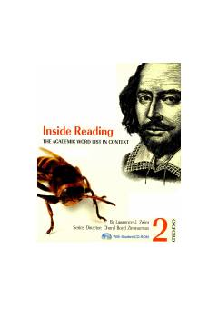

IRAkademik ingliz tili lug'atini o'rta darajada o'rgatuvchi o'quv qo'llanma.
Bu kitob akademik ingliz tili lug'atini o'rgatishga mo'ljallangan o'rta daraja o'quvchilari uchun qo'llanma bo'lib, Academic Word List (AWL) asosida tuzilgan. Kitob turli mavzulardagi o'qish matnlari orqali akademik so'z boyligini kontekstda o'rgatadi. Oxford University Press tomonidan nashr etilgan bo'lib, CD-ROM qo'shimchasi bilan birga keladi.